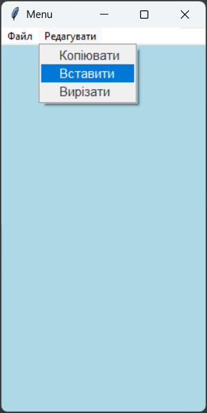
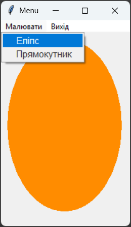
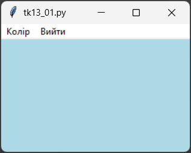

Віджет Menu – клас для створення меню в Tkinter. Меню присутнє у багатьох додатках. Ви можете створювати різні типи меню, такі як спадні меню, контекстні меню та панелі інструментів, а також додавати до них різноманітні елементи, такі як команди, перемикачі та підменю.
Загальний синтаксис:
name = Menu(window, options)
windows.config(menu=name)
де, name – ім'я меню, window – ім'я вікна, на якому розташовується меню, options – параметри меню.
Властивості Menu:
| Властивість | Значення |
|---|---|
| tearoff | Визначає, чи може меню бути від'єднаним від вікна. Якщо встановлено в 1 (за замовчуванням), меню може бути від'єднаним, якщо встановлено в 0, меню не може бути від'єднаним. |
| bg | Визначає колір фону меню. |
| fg | Визначає колір тексту в меню. |
| activebackground | Визначає колір фону для активного пункту меню. |
| activeforeground | Визначає колір тексту для активного пункту меню. |
| font | Визначає шрифт для тексту в меню. |
| borderwidth | Визначає товщину рамки навколо меню. |
| relief | Визначає стиль рамки навколо меню (наприклад, FLAT, RAISED, SUNKEN, GROOVE, RIDGE). |
| postcommand | Визначає функцію, яка буде викликана перед відображенням меню. Це дозволяє вам динамічно оновлювати вміст меню перед його показом. |
Підменю створюються подібним чином. Основна відмінність полягає в тому, що вони прикріплені до батьківського меню (за допомогою add_cascade) замість вікна верхнього рівня. Параметри підменю такі ж, як і для основного меню, але вони застосовуються до підменю замість основного меню.
Методи Menu:
Віджет Menu має багато методів, які дозволяють вам додавати різні типи пунктів меню, такі як команди, перемикачі та підменю. Ось деякі з основних методів, які ви можете використовувати для створення та керування меню в Tkinter:
| Метод | Опис |
|---|---|
| add_command() | Додає пункт меню, який виконує певну команду при виборі. |
| add_separator() | Додає роздільник між пунктами меню. |
| add_cascade() | Додає підменю до основного меню. |
| add_checkbutton() | Додає пункт меню з прапорцем, який можна встановити або зняти. |
| add_radiobutton() | Додає пункт меню з радіокнопкою, який можна вибрати серед інших пунктів. |
| delete() | Видаляє пункт меню за його індексом або діапазоном індексів. |
| entryconfig() | Налаштовує параметри пункту меню за його індексом. |
| index() | Повертає індекс пункту меню за його назвою або типом. |
| invoke() | Виконує команду, пов'язану з пунктом меню за його індексом. |
Ці методи дозволяють вам створювати складні та функціональні меню в ваших додатках Tkinter, надаючи користувачам зручний спосіб взаємодії з вашим інтерфейсом.
Приклад як створити підменю в головному меню:
name = Menu(my_menu)
my_menu.add_cascade(label="Name", menu=name)
де, name – ім'я підменю, my_menu – ім'я головного меню, "Name" – мітка підменю.
Додамо команди до підменю:
name.add_command(label="Option 1", command=option1_function)
name.add_command(label="Option 2", command=option2_function)
my_menu.add_cascade(label="Name", menu=name)
де, Option 1 та Option 2 – назви команд, option1_function та option2_function – функції, які виконуються при виборі відповідної команди.
1. Створимо меню з двома пунктами: "Файл" та "Редагувати". Пункт "Файл" міститиме підменю з командами "Новий", "Відкрити" та "Зберегти", а пункт "Редагувати" міститиме підменю з командами "Копіювати", "Вставити" та "Вирізати". Кожна команда буде пов'язана з відповідною функцією, яка виконується при виборі команди. Крім того, ми налаштуємо кольори та шрифт для меню, щоб зробити його більш привабливим.
from tkinter import *
root = Tk()
root.title("Menu")
my_menu = Menu(root, tearoff=0, bg="#f0f0f0", fg="#333333")
file_menu = Menu(my_menu, tearoff=0, fg="#333333", font="Arial 11")
file_menu.add_command(label="Новий")
file_menu.add_command(label="Відкрити")
file_menu.add_command(label="Зберегти")
edit_menu = Menu(my_menu, tearoff=0, fg="#333333", font="Arial 11")
edit_menu.add_command(label="Копіювати")
edit_menu.add_command(label="Вставити")
edit_menu.add_command(label="Вирізати")
my_menu.add_cascade(label="Файл", menu=file_menu)
my_menu.add_cascade(label="Редагувати", menu=edit_menu)
root.config(menu=my_menu)
root.mainloop()

2. Створимо вікно з пунктами меню "Малювати" (має підпункти "Еліпс" і "Прямокутник") та "Вихід" (має підпункт "Вийти з програми"). Команди "Еліпс" і "Прямокутник" малюють на полотні Canvas відповідні фігури, а команда "Вийти з програми" закриває вікно.
from tkinter import *
root = Tk()
root.title("Menu")
def oval():
c.delete("all")
c.create_oval(10, 10, 190, 280, fill="#ff8c00", outline="#ff8c00")
def rectangle():
c.delete("all")
c.create_rectangle(10, 10, 190, 280, fill="light green", outline="light green")
mainmenu = Menu(root)
root.config(menu=mainmenu)
drawmenu = Menu(mainmenu, tearoff=0, fg="#333333", font="Arial 11")
drawmenu.add_command(label="Еліпс", command=oval)
drawmenu.add_command(label="Прямокутник", command=rectangle)
exitmenu = Menu(mainmenu, tearoff=0, fg="#333333", font="Arial 11")
exitmenu.add_command(label="Вийти з програми", command=root.destroy)
mainmenu.add_cascade(label="Малювати", menu=drawmenu)
mainmenu.add_cascade(label="Вихід", menu=exitmenu)
c = Canvas(root, width=200, height=300)
c.pack()
root.mainloop()

1. Створіть вікно програми з меню за зразком. Меню має містити наступні пункти: "Колір" та "Вийти". Пункт меню "Колір" повинен змінювати колір вікна на блакитний. Пункт "Вийти" повинен закривати вікно. Обидва пункти мають бути пов'язані з відповідними функціями, які виконуються при виборі команд. Налаштуйте кольори та шрифт для меню, щоб зробити його більш привабливим. Файл з кодом програми збережіть у власну папку з іменем tk_13_01.py.
Зразок

2. Створіть вікно програми та додайте у нього віджет Canvas (полотно) розміром 400x400. Додайте до вікна меню з двома пунктами: "Фігури" та "Вихід". Пункт меню "Фігури" повинен містити підпункти "Коло", "Квадрат" та "Трикутник". При виборі пункту "Коло" на полотні має з'являтися коло, при виборі пункту "Квадрат" – квадрат, а при виборі пункту "Трикутник" – трикутник. Пункт меню "Вихід" повинен закривати вікно. Форму геометричних вігур та кольори підберіть за власним вподобанням. Файл з кодом програми збережіть у власну папку з іменем tk_13_02.py.